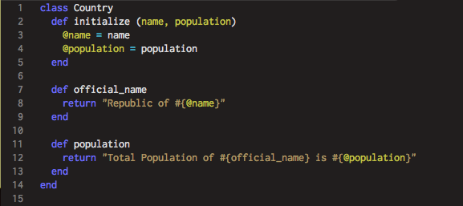

Ruby Classes
As a Ruby beginner, you must hear the phrase "Ruby is an object-oriented language" way too often. In object-oriented langauge such as Ruby, a class is the blueprint from which objects are created. A class can define the characteristics of an object, or it can define a combination of functions to an object. For example Countries is a class, and the United States is an instance of the class of objects known as Countries. Within the class Countries, various characteristics can be defined, such as population, political system, economic system and so on based.
In Ruby, classes are concepts that perform operations and define relationships when an instance object is created. A class allows programmer to group methods, which describe actions, together conveniently, and allows multiple objects to behave the same way. Every Ruby object is an instance of some class.
To define a class is easy, you start with the keyword class followed by the name of the class. The name of the class is always capitalized. Within a class, one can bundle numerous methods that interact with each other using instance variables. Instance variables are available across methods for a particular instance. Instance Variables are preceded by @ followed by the variable name. Using the example below, I will illustrate how to define a class and its methods.
In this example, I defined a class called Country. Using a method called initialize, it receives two arguments, name and population, and set them to instance variables to be used throughout class Country. Besides initialize, this class has two other methods defined. official_name takes one of the variables and return an official name of the country. Whereas population simply returns a sentence that introduce the country with its official name and its population. By using instance variable, in the case, @name and @population, I was able to pass the information between different methods within class Country.